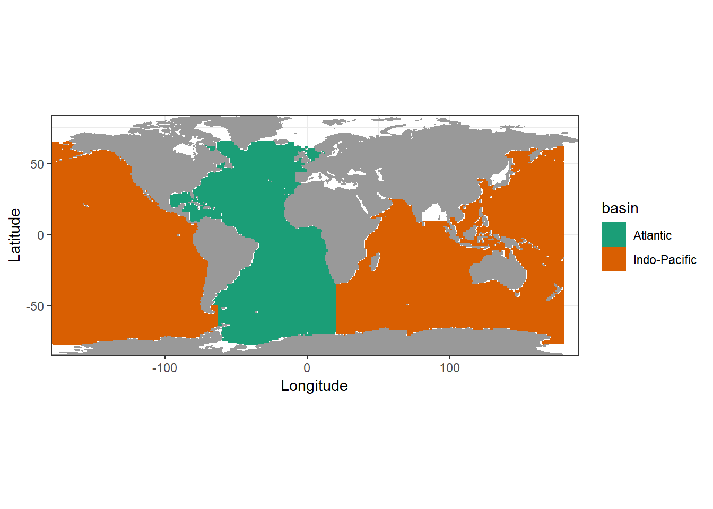
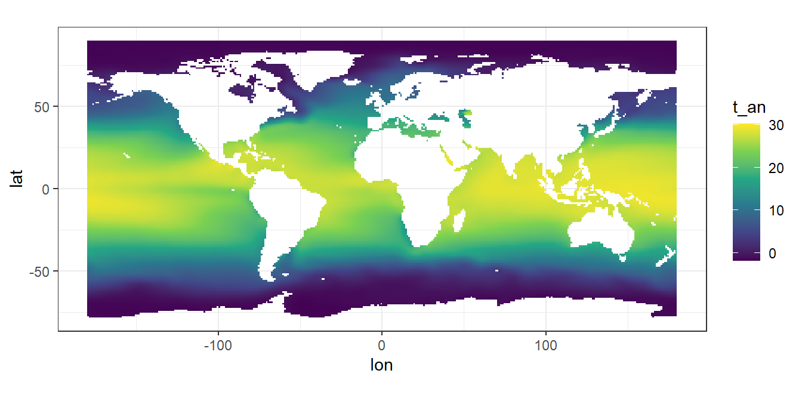
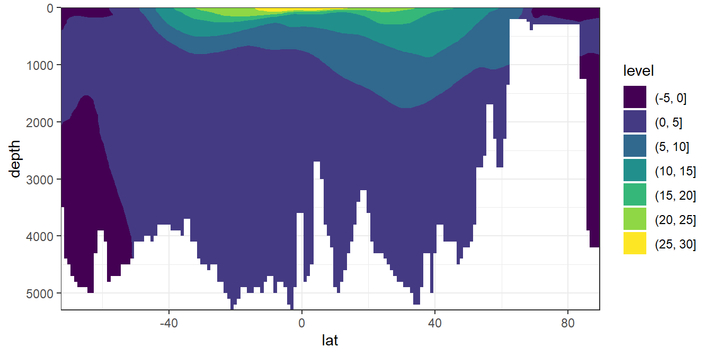
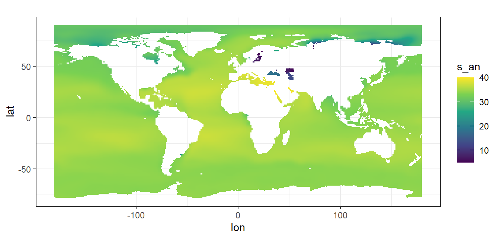
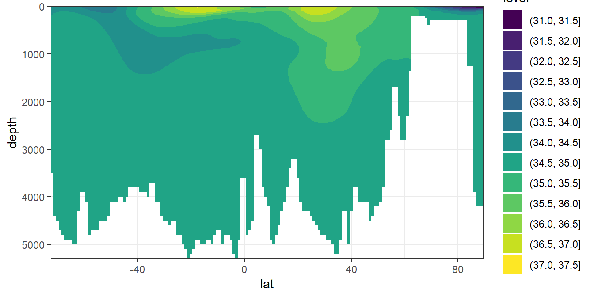

Last updated: 2020-07-24
Checks: 7 0
Knit directory: Cant_eMLR/
This reproducible R Markdown analysis was created with workflowr (version 1.6.2). The Checks tab describes the reproducibility checks that were applied when the results were created. The Past versions tab lists the development history.
Great! Since the R Markdown file has been committed to the Git repository, you know the exact version of the code that produced these results.
Great job! The global environment was empty. Objects defined in the global environment can affect the analysis in your R Markdown file in unknown ways. For reproduciblity it’s best to always run the code in an empty environment.
The command set.seed(20200707) was run prior to running the code in the R Markdown file. Setting a seed ensures that any results that rely on randomness, e.g. subsampling or permutations, are reproducible.
Great job! Recording the operating system, R version, and package versions is critical for reproducibility.
Nice! There were no cached chunks for this analysis, so you can be confident that you successfully produced the results during this run.
Great job! Using relative paths to the files within your workflowr project makes it easier to run your code on other machines.
Great! You are using Git for version control. Tracking code development and connecting the code version to the results is critical for reproducibility.
The results in this page were generated with repository version 864a6e3. See the Past versions tab to see a history of the changes made to the R Markdown and HTML files.
Note that you need to be careful to ensure that all relevant files for the analysis have been committed to Git prior to generating the results (you can use wflow_publish or wflow_git_commit). workflowr only checks the R Markdown file, but you know if there are other scripts or data files that it depends on. Below is the status of the Git repository when the results were generated:
Ignored files:
Ignored: .Rproj.user/
Ignored: data/GLODAPv2_2016b_MappedClimatologies/
Ignored: data/GLODAPv2_2020/
Ignored: data/World_Ocean_Atlas_2018/
Ignored: data/pCO2_atmosphere/
Ignored: dump/
Ignored: output/figure/
Untracked files:
Untracked: analysis/mapping.Rmd
Note that any generated files, e.g. HTML, png, CSS, etc., are not included in this status report because it is ok for generated content to have uncommitted changes.
These are the previous versions of the repository in which changes were made to the R Markdown (analysis/read_World_Ocean_Atlas_2018.Rmd) and HTML (docs/read_World_Ocean_Atlas_2018.html) files. If you’ve configured a remote Git repository (see ?wflow_git_remote), click on the hyperlinks in the table below to view the files as they were in that past version.
| File | Version | Author | Date | Message |
|---|---|---|---|---|
| Rmd | 864a6e3 | jens-daniel-mueller | 2020-07-24 | merged predictor data sets |
| html | eb716ce | jens-daniel-mueller | 2020-07-23 | Build site. |
| Rmd | ffd46da | jens-daniel-mueller | 2020-07-23 | WOA18 read in |
| html | 556e6cc | jens-daniel-mueller | 2020-07-23 | Build site. |
| html | c1289a2 | jens-daniel-mueller | 2020-07-23 | Build site. |
| html | 2890e73 | jens-daniel-mueller | 2020-07-23 | Build site. |
| html | fdfa7b9 | jens-daniel-mueller | 2020-07-22 | Build site. |
| html | bb9c002 | jens-daniel-mueller | 2020-07-21 | Build site. |
| Rmd | d2ed0f8 | jens-daniel-mueller | 2020-07-21 | harmonied lat lon labeling |
| html | 97dbf5b | jens-daniel-mueller | 2020-07-21 | Build site. |
| Rmd | 5def7e8 | jens-daniel-mueller | 2020-07-21 | create csvs for each parameter |
| html | b47adc2 | jens-daniel-mueller | 2020-07-20 | Build site. |
| Rmd | 366d7d5 | jens-daniel-mueller | 2020-07-20 | update plots |
| html | 1de1bc0 | jens-daniel-mueller | 2020-07-20 | Build site. |
| Rmd | 68e4615 | jens-daniel-mueller | 2020-07-20 | assigned ocean basins and plotted world map |
| html | 3149ffd | jens-daniel-mueller | 2020-07-20 | Build site. |
| Rmd | 918f8c8 | jens-daniel-mueller | 2020-07-20 | assigned ocean basins and plotted world map |
| html | 2fa2896 | jens-daniel-mueller | 2020-07-20 | Build site. |
| Rmd | 23220a8 | jens-daniel-mueller | 2020-07-20 | assigned ocean basins and plotted world map |
| html | 27d380d | jens-daniel-mueller | 2020-07-20 | Build site. |
| Rmd | 09f3f73 | jens-daniel-mueller | 2020-07-20 | basin masks read in |
| html | 22b588c | jens-daniel-mueller | 2020-07-18 | Build site. |
| Rmd | 87a4680 | jens-daniel-mueller | 2020-07-18 | added WOA blank script |
library(tidyverse)
library(lubridate)
library(tidync)
library(stars)The surface mask (0m) with 1x1° resolution from the file basinmask_01.msk was used.
basinmask_01 <- read_csv(here::here("data/World_Ocean_Atlas_2018",
"basinmask_01.msk"),
skip = 1)
basinmask_01 <- basinmask_01 %>%
select(Latitude:Basin_0m) %>%
mutate(Basin_0m = as.factor(Basin_0m)) %>%
rename(lat = Latitude, lon = Longitude)According to WOA FAQ website, number codes in the mask file refer to Ocean basins as follows:
From this, the Atlantik and the Indo-Pacific were labeled.
basinmask_01 <- basinmask_01 %>%
filter(Basin_0m %in% c("1", "2", "3", "10")) %>%
mutate(basin = if_else(Basin_0m == "10" & lon >= -63 & lon < 20,
"Atlantic", "Indo-Pacific"),
basin = if_else(Basin_0m == "1",
"Atlantic", basin)) %>%
select(-Basin_0m)mapWorld <- borders("world", colour="gray60", fill="gray60")
basinmask_01 %>%
ggplot(aes(lon, lat, fill=basin))+
mapWorld+
geom_raster()+
scale_fill_brewer(palette = "Dark2")+
coord_quickmap(expand = 0)
rm(mapWorld)basinmask_01 %>%
write_csv(here::here("data/World_Ocean_Atlas_2018/_summarized_files",
"basin_mask_WOA18.csv"))
rm(basinmask_01)File naming conventions: PREF_DDDD_VTTFFGG.EXT, where:
Note: ‘.dat’ - ASCII; ‘.csv’ - comma separated value; ‘.dbf’, ‘.shp’, ‘.shx’ - ArcGIS shape files; ‘.nc’ - netCDF files
Short description of the statistical fields in WOA
WOA_tem <- tidync(here::here("data/World_Ocean_Atlas_2018",
"woa18_decav_t00_01.nc"))
print(WOA_tem)
Data Source (1): woa18_decav_t00_01.nc ...
Grids (10) <dimension family> : <associated variables>
[1] D2,D1,D3,D4 : t_an, t_mn, t_dd, t_sd, t_se, t_oa, t_gp **ACTIVE GRID** ( 6609600 values per variable)
[2] D0,D1 : lat_bnds
[3] D0,D2 : lon_bnds
[4] D0,D3 : depth_bnds
[5] D0,D4 : climatology_bounds
[6] D1 : lat
[7] D2 : lon
[8] D3 : depth
[9] D4 : time
[10] S : crs
Dimensions 5 (4 active):
dim name length min max start count dmin dmax unlim coord_dim
<chr> <chr> <dbl> <dbl> <dbl> <int> <int> <dbl> <dbl> <lgl> <lgl>
1 D1 lat 180 -89.5 89.5 1 180 -89.5 89.5 FALSE TRUE
2 D2 lon 360 -180. 180. 1 360 -180. 180. FALSE TRUE
3 D3 depth 102 0 5500 1 102 0 5500 FALSE TRUE
4 D4 time 1 4326 4326 1 1 4326 4326 FALSE TRUE
Inactive dimensions:
dim name length min max unlim coord_dim
<chr> <chr> <dbl> <dbl> <dbl> <lgl> <lgl>
1 D0 nbounds 2 1 2 FALSE FALSE WOA_tem_tibble <- WOA_tem %>% hyper_tibble()
WOA_tem_tibble <- WOA_tem_tibble %>%
select(t_an, lon, lat, depth) %>%
drop_na()
WOA_tem_tibble %>%
filter(depth == 0) %>%
ggplot(aes(lon, lat, fill=t_an))+
geom_raster()+
coord_quickmap()+
scale_fill_viridis_c()
WOA_tem_tibble %>%
filter(lon == -20.5) %>%
ggplot(aes(lat, depth, z=t_an))+
geom_contour_filled()+
scale_y_reverse()+
coord_cartesian(expand = 0)
WOA_sal <- tidync(here::here("data/World_Ocean_Atlas_2018",
"woa18_decav_s00_01.nc"))
print(WOA_sal)
Data Source (1): woa18_decav_s00_01.nc ...
Grids (10) <dimension family> : <associated variables>
[1] D2,D1,D3,D4 : s_an, s_mn, s_dd, s_sd, s_se, s_oa, s_gp **ACTIVE GRID** ( 6609600 values per variable)
[2] D0,D1 : lat_bnds
[3] D0,D2 : lon_bnds
[4] D0,D3 : depth_bnds
[5] D0,D4 : climatology_bounds
[6] D1 : lat
[7] D2 : lon
[8] D3 : depth
[9] D4 : time
[10] S : crs
Dimensions 5 (4 active):
dim name length min max start count dmin dmax unlim coord_dim
<chr> <chr> <dbl> <dbl> <dbl> <int> <int> <dbl> <dbl> <lgl> <lgl>
1 D1 lat 180 -89.5 89.5 1 180 -89.5 89.5 FALSE TRUE
2 D2 lon 360 -180. 180. 1 360 -180. 180. FALSE TRUE
3 D3 depth 102 0 5500 1 102 0 5500 FALSE TRUE
4 D4 time 1 4326 4326 1 1 4326 4326 FALSE TRUE
Inactive dimensions:
dim name length min max unlim coord_dim
<chr> <chr> <dbl> <dbl> <dbl> <lgl> <lgl>
1 D0 nbounds 2 1 2 FALSE FALSE WOA_sal_tibble <- WOA_sal %>% hyper_tibble()
WOA_sal_tibble <- WOA_sal_tibble %>%
select(s_an, lon, lat, depth) %>%
drop_na()
WOA_sal_tibble %>%
filter(depth == 0) %>%
ggplot(aes(lon, lat, fill=s_an))+
geom_raster()+
coord_quickmap()+
scale_fill_viridis_c()
WOA_sal_tibble %>%
filter(lon == -20.5) %>%
ggplot(aes(lat, depth, z=s_an))+
geom_contour_filled()+
scale_y_reverse()+
coord_cartesian(expand = 0)
WOA18_predictors <- full_join(WOA_sal_tibble, WOA_tem_tibble)
WOA18_predictors %>%
write_csv(here::here("data/World_Ocean_Atlas_2018/_summarized_files",
"WOA18_predictors.csv"))
rm(WOA18_predictors, WOA_sal, WOA_sal_tibble, WOA_tem, WOA_tem_tibble)
sessionInfo()R version 3.6.3 (2020-02-29)
Platform: i386-w64-mingw32/i386 (32-bit)
Running under: Windows 10 x64 (build 18363)
Matrix products: default
locale:
[1] LC_COLLATE=English_Germany.1252 LC_CTYPE=English_Germany.1252
[3] LC_MONETARY=English_Germany.1252 LC_NUMERIC=C
[5] LC_TIME=English_Germany.1252
attached base packages:
[1] stats graphics grDevices utils datasets methods base
other attached packages:
[1] stars_0.4-3 sf_0.9-4 abind_1.4-5 tidync_0.2.4
[5] lubridate_1.7.9 forcats_0.5.0 stringr_1.4.0 dplyr_1.0.0
[9] purrr_0.3.4 readr_1.3.1 tidyr_1.1.0 tibble_3.0.3
[13] ggplot2_3.3.2 tidyverse_1.3.0 workflowr_1.6.2
loaded via a namespace (and not attached):
[1] Rcpp_1.0.5 whisker_0.4 knitr_1.29 xml2_1.3.2
[5] magrittr_1.5 maps_3.3.0 units_0.6-7 hms_0.5.3
[9] rvest_0.3.5 tidyselect_1.1.0 viridisLite_0.3.0 here_0.1
[13] colorspace_1.4-1 R6_2.4.1 rlang_0.4.7 fansi_0.4.1
[17] parallel_3.6.3 broom_0.7.0 xfun_0.15 e1071_1.7-3
[21] ncmeta_0.2.5 dbplyr_1.4.4 modelr_0.1.8 withr_2.2.0
[25] git2r_0.27.1 ellipsis_0.3.1 htmltools_0.5.0 class_7.3-17
[29] assertthat_0.2.1 rprojroot_1.3-2 digest_0.6.25 lifecycle_0.2.0
[33] RNetCDF_2.3-1 haven_2.3.1 rmarkdown_2.3 compiler_3.6.3
[37] cellranger_1.1.0 pillar_1.4.6 scales_1.1.1 backports_1.1.5
[41] generics_0.0.2 classInt_0.4-3 jsonlite_1.7.0 httpuv_1.5.4
[45] pkgconfig_2.0.3 rstudioapi_0.11 munsell_0.5.0 blob_1.2.1
[49] httr_1.4.1 tools_3.6.3 grid_3.6.3 gtable_0.3.0
[53] utf8_1.1.4 KernSmooth_2.23-16 DBI_1.1.0 cli_2.0.2
[57] readxl_1.3.1 yaml_2.2.1 lwgeom_0.2-5 crayon_1.3.4
[61] farver_2.0.3 RColorBrewer_1.1-2 later_1.1.0.1 promises_1.1.1
[65] fs_1.4.2 vctrs_0.3.1 isoband_0.2.2 ncdf4_1.17
[69] glue_1.4.1 evaluate_0.14 labeling_0.3 reprex_0.3.0
[73] stringi_1.4.6